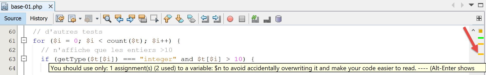

3. أساسيات PHP
3.1. هيكل دليل البرامج النصية

3.2. تكوين PHP
يأتي PHP مهيئًا مسبقًا عبر ملف نصي [php.ini]. يمكن تغيير جميع هذه الإعدادات برمجيًا. يؤثر تكوين PHP بشكل كبير على تنفيذ البرنامج النصي. لذلك من المهم فهمه. يتيح لك البرنامج النصي التالي [phpinfo.php] القيام بذلك:
تعليقات
- السطر 3: تعرض الدالة [phpinfo] إعدادات PHP؛
نتائج التنفيذ
تعرض وظيفة [phpinfo] أكثر من 800 سطر تكوين هنا. لن نعلق عليها لأن معظمها يتعلق باستخدامات PHP المتقدمة. السطر المهم هو السطر 13 أعلاه: فهو يشير إلى ملف [php.ini] الذي تم استخدامه لتكوين PHP الذي ستستخدمه لتشغيل البرامج النصية الخاصة بك. إذا كنت ترغب في تغيير تكوين وقت تشغيل PHP، فهذا هو الملف الذي تحتاج إلى تعديله. هناك العديد من التعليقات في هذا الملف تشرح دور الإعدادات المختلفة.
3.3. مثال أول
3.3.1. الكود
فيما يلي برنامج [bases-01.php] يوضح الميزات الأساسية لـ PHP.
<?php
// this is a comment
// variable used without being declared
$nom = "dupont";
// a screen display
print "nom=$nom\n";
// an array with elements of different types
$tableau = array("un", "deux", 3, 4);
// its number of elements
$n = count($tableau);
// a loop
for ($i = 0; $i < $n; $i++) {
print "tableau[$i]=$tableau[$i]\n";
}
// initialize 2 variables with the contents of an array
list($chaine1, $chaine2) = array("chaine1", "chaine2");
// concatenation of the 2 strings
$chaine3 = $chaine1 . $chaine2;
// result display
print "[$chaine1,$chaine2,$chaine3]\n";
// use function
affiche($chaine1);
// the type of a variable can be known
afficheType("n", $n);
afficheType("chaine1", $chaine1);
afficheType("tableau", $tableau);
// the type of a variable can change at runtime
$n = "a changé";
afficheType("n", $n);
// a function can return a result
$res1 = f1(4);
print "res1=$res1\n";
// a function can render a table of values
list($res1, $res2, $res3) = f2();
print "(res1,res2,res3)=[$res1,$res2,$res3]\n";
// we could have retrieved these values in a table
$t = f2();
for ($i = 0; $i < count($t); $i++) {
print "t[$i]=$t[$i]\n";
}
// testing
for ($i = 0; $i < count($t); $i++) {
// displays only channels
if (getType($t[$i]) === "string") {
print "t[$i]=$t[$i]\n";
}
}
// == and === comparison operators
if("2"==2){
print "avec l'opérateur ==, la chaîne 2 est égale à l'entier 2\n";
}else{
print "avec l'opérateur ==, la chaîne 2 n'est pas égale à l'entier 2\n";
}
if("2"===2){
print "avec l'opérateur ===, la chaîne 2 est égale à l'entier 2\n";
}
else{
print "avec l'opérateur ===, la chaîne 2 n'est pas égale à l'entier 2\n";
}
// other tests
for ($i = 0; $i < count($t); $i++) {
// displays only integers >10
if (getType($t[$i]) === "integer" and $t[$i] > 10) {
print "t[$i]=$t[$i]\n";
}
}
// a while loop
$t = [8, 5, 0, -2, 3, 4];
$i = 0;
$somme = 0;
while ($i < count($t) and $t[$i] > 0) {
print "t[$i]=$t[$i]\n";
$somme += $t[$i]; //$somme=$somme+$t[$i]
$i++; //$i=$i+1
}//while
print "somme=$somme\n";
// end of program
exit;
//----------------------------------
function affiche($chaine) {
// displays $chaine
print "chaine=$chaine\n";
}
//poster
//----------------------------------
function afficheType($name, $variable) {
// displays the type of $variable
print "type[variable $" . $name . "]=" . getType($variable) . "\n";
}
//afficheType
//----------------------------------
function f1($param) {
// adds 10 to $param
return $param + 10;
}
//----------------------------------
function f2() {
// returns 3 values
return array("un", 0, 100);
}
?>
النتائج:
nom=dupont
tableau[0]=un
tableau[1]=deux
tableau[2]=3
tableau[3]=4
[chaine1,chaine2,chaine1chaine2]
chaine=chaine1
type[variable $n]=integer
type[variable $chaine1]=string
type[variable $tableau]=array
type[variable $n]=string
res1=14
(res1,res2,res3)=[un,0,100]
t[0]=un
t[1]=0
t[2]=100
t[0]=un
avec l'opérateur ==, la chaîne 2 est égale à l'entier 2
avec l'opérateur ===, la chaîne 2 n'est pas égale à l'entier 2
t[2]=100
t[0]=8
t[1]=5
somme=13
تعليقات
- السطر 5: في PHP، لا يتم تعريف أنواع المتغيرات. المتغيرات لها نوع ديناميكي يمكن أن يتغير بمرور الوقت. $name يمثل المتغير الذي يحمل المعرف name؛
- السطر 7: لعرض الناتج على الشاشة، يمكنك استخدام عبارة print أو عبارة echo؛
- السطر 9: تُستخدم الكلمة الرئيسية array لتعريف مصفوفة. يمثل المتغير $name[$i] العنصر $i من مصفوفة $array؛
- السطر 11: تُرجع الدالة count($tableau) عدد العناصر في المصفوفة $tableau؛
- الأسطر 13–15: حلقة. نظرًا لأن هذه الحلقة تحتوي على تعليمة واحدة فقط، فإن الأقواس المتعرجة اختيارية. في بقية هذا المستند، سنستخدم دائمًا الأقواس المتعرجة بغض النظر عن عدد التعليمة؛
- السطر 14: تُحاط السلاسل بعلامات اقتباس مزدوجة " أو علامات اقتباس مفردة '. يتم تقييم المتغيرات $variable داخل علامات الاقتباس المزدوجة، ولكن ليس داخل علامات الاقتباس المفردة؛
- السطر 17: تسمح لك دالة list بتجميع المتغيرات في قائمة وتعيين قيمة لها بعملية تعيين واحدة. هنا، $chaine1="chaine1" و $chaine2="chaine2"؛
- السطر 19: عامل . هو عامل ربط السلاسل؛
- الأسطر 83–86: الكلمة الرئيسية `function` تُعرّف دالة. قد تُرجع الدالة قيمًا أو لا تُرجعها باستخدام عبارة `return`. يمكن للكود المستدعي تجاهل نتائج الدالة أو استردادها. يمكن تعريف الدالة في أي مكان في الكود.
- السطر 92: الدالة المُعرَّفة مسبقًا getType($variable) تُرجع سلسلة تمثل نوع $variable. قد يتغير هذا النوع بمرور الوقت؛
- السطر 45: يقوم عامل === بإجراء مقارنة صارمة بين عنصرين: يجب أن يكونا من نفس النوع ليتم مقارنتهما. عامل == أقل صرامة: يمكن أن يكون عنصران متساويين دون أن يكونا من نفس النوع. يتضح ذلك من خلال العبارات في الأسطر 50–60. في حالة عامل ==، تتم المقارنة بعد تحويل كلا العنصرين قيد المقارنة إلى نفس النوع. ثم تحدث التحويلات الضمنية. من السهل جدًا "نسيان" هذه التحويلات الضمنية وبالتالي الحصول على نتائج غير متوقعة، مثل اكتشاف أن الشرط صحيح بينما كنت تتوقع أنه خطأ. لتجنب هذا المأزق، سنستخدم عامل المقارنة === بشكل منهجي؛
- السطر 64: يمكنك أيضًا استخدام عوامل التشغيل المنطقية or و !؛
- السطر 69: بدلاً من صيغة array()، يمكنك استخدام صيغة [] لتهيئة مصفوفة في PHP 7؛
- السطر 80: توقف الدالة exit المُعرَّفة مسبقًا تشغيل البرنامج النصي؛
- السطر 107: تشير العلامة ?> إلى نهاية البرنامج النصي PHP. وهي ليست ضرورية. علاوة على ذلك، في سياق الويب، يمكن أن تسبب مشاكل إذا تبعها مسافات أو فواصل أسطر، والتي يصعب اكتشافها لأنها غير مرئية في محرر النصوص. لذلك، في بقية هذا المستند، سنحذف هذه العلامة باستمرار؛
ملاحظة: في هذا المستند، سنستخدم الكلمة الرئيسية [print] لعرض النص على وحدة التحكم. هناك طريقة أخرى للقيام بنفس الشيء وهي استخدام الكلمة الرئيسية [echo]. هناك اختلافات طفيفة بين هاتين الكلمتين الرئيسيتين، ولكن في سياق هذا المستند، لن يكون هناك أي اختلاف. لذا، إذا كنت تفضل استخدام [echo]، فافعل ذلك.
3.3.2. استخدام NetBeans
يصدر NetBeans العديد من التحذيرات التي تستحق المراجعة. لنأخذ مثال البرنامج النصي [bases-01.php]:

في السطر 5، يصدر NetBeans تحذيرًا بأن الملف لا يتوافق مع توصية PSR-1 (توصيات معايير PHP رقم 1). PSRs هي توصيات لإنتاج كود قياسي لتسهيل قابلية التشغيل البيني وصيانة الكود المكتوب من قبل أشخاص مختلفين. قد يكون من المزعج تلقي تحذيرات إذا كنت ترغب في خرق المعايير عمدًا، على سبيل المثال لأن فريق المشروع لديه معايير مختلفة. يمكن تكوين ما تريد التحقق منه أو عدم التحقق منه باستخدام NetBeans:

- في [5]، ستجد العناصر التي تريد التحقق منها باستخدام NetBeans؛
- في [6]، مستوى الخطورة المخصص للخطأ الذي أبلغ عنه NetBeans؛

في [7]، يمكنك أن ترى أننا طلبنا التحقق من أن الكود يتبع توصيات PSR-0 و PSR-1. لا شيء إلزامي. عند تعلم اللغة، يُنصح بالتحقق من أكبر عدد ممكن من الخيارات التي يقدمها NetBeans. ستتعلم الكثير بهذه الطريقة. يمكنك بعد ذلك تكييف فحوصات NetBeans هذه مع معايير البرمجة الخاصة بفريق مشروعك.
دعونا نلقي نظرة على معايير البرمجة PSR-1 [8، 9]:
الخيار | التحقق |
| يجب إعلان ثوابت الفئة بأحرف كبيرة مع فواصل تحتية. مثال: const TAUX_TVA |
| يجب إعلان أسماء الطرق باستخدام camelCase(). مثال: public function executeBatchTaxes{} |
| يجب أن تُعلن أسماء الخصائص بتنسيق $StudlyCaps أو $camelCase أو $under_score (بشكل متسق داخل نطاق معين) مثال: public AnnualSalary (StudlyCaps)، public annualSalary (camelCase)، public annual_salary (underscore) |
| يجب أن يعلن الملف رموزًا جديدة ولا يتسبب في أي آثار جانبية أخرى، أو يجب أن ينفذ منطقًا له آثار جانبية، ولكن لا يجب أن يفعل كلا الأمرين. |
| يجب أن تُعلن أسماء الأنواع بتنسيق StudlyCaps (يجب أن يستخدم الكود المكتوب للإصدار 5.2.x والإصدارات الأقدم اتفاقية التسمية الزائفة لبادئات Vendor_ في أسماء الأنواع). يوجد كل نوع في ملفه الخاص ويكون في مساحة اسم من مستوى واحد على الأقل: اسم مورد من المستوى الأعلى. مثال: class ScholarshipStudent {} |
تنص توصية PSR-1/4 على أن ملف PHP يجب أن يحتوي على:
- إما إعلان نوع (فئات، واجهات)؛
- أو كود قابل للتنفيذ بدون إعلانات لأنواع جديدة؛
هناك توصيات PHP أخرى لا يفرضها NetBeans: PSR-3 و PSR-4 و PSR-6 و PSR-7 و PSR-13.
للتبسيط، لا تلتزم جميع الأمثلة في هذا المستند بتوصية PSR-1، حيث إن ذلك يتطلب تقسيم كود الفئات والواجهات إلى ملفات منفصلة، وهو أمر مرهق للغاية بالنسبة للأمثلة الأساسية. لذلك، من الأسهل وضع كل شيء في ملف واحد. بالنسبة للتطبيق النموذجي المقدم كموضوع رئيسي لهذا المستند، فقد سعينا إلى اتباع توصية PSR-1 بأكبر قدر ممكن.
تشير بعض تحذيرات NetBeans إلى وجود خطأ محتمل:

يشير تحذير [المتغيرات غير المُهيأة] إلى خطأ محتمل، غالبًا ما يكون خطأً مطبعيًا في اسم المتغير. وينطبق الأمر نفسه على تحذير [المتغيرات غير المستخدمة].
أخيرًا، يوصى بالتحقق من جميع تحذيرات NetBeans، والتي يشار إليها بواسطة لافتة في الهامش الأيسر للكود وشرطة صفراء في الهامش الأيمن:


3.4. نطاق المتغير
3.4.1. مثال 1
النص البرمجي [bases-02.php] هو كما يلي:
<?php
// variable scope
function f1() {
// we use the global variable $i
global $i;
$i++;
$j = 10;
print "f1[i,j]=[$i,$j]\n";
}
function f2() {
// we use the global variable $i
global $i;
$i++;
$j = 20;
print "f2[i,j]=[$i,$j]\n";
}
function f3() {
// we use a local variable $i
$i = 4;
$j = 30;
print "f3[i,j]=[$i,$j]\n";
}
// tests
$i = 0;
$j = 0; // these two variables are known only to a function f
// only if it explicitly declares with the global instruction
// she wants to use them
f1();
f2();
f3();
print "test[i,j]=[$i,$j]\n";
النتائج:
تعليقات
- السطران 29–30: تعريف متغيرين، $i و $j، في البرنامج الرئيسي. هذه المتغيرات غير معروفة داخل الدوال. وبالتالي، في السطر 9، المتغير $j في الدالة f1 هو متغير محلي للدالة f1 ويختلف عن المتغير $j في البرنامج الرئيسي. يمكن للدالة الوصول إلى متغير $variable في البرنامج الرئيسي باستخدام الكلمة الرئيسية global؛
- السطر 7، تشير العبارة إلى المتغير العام $i في البرنامج الرئيسي؛
3.4.2. المثال 3
النص البرمجي [bases-03.php] هو كما يلي:
<?php
// the scope of a variable is global to code blocks
$i = 0; {
$i = 4;
$i++;
}
print "i=$i\n";
النتائج:
تعليقات
في بعض اللغات، يكون نطاق المتغير المُعرَّف داخل الأقواس المتعرجة هو نطاق تلك الأقواس: أي أنه غير معروف خارجها. تظهر النتائج أعلاه أن هذا ليس هو الحال في PHP. المتغير $i المُعرَّف في السطر 5 داخل الأقواس المتعرجة هو نفسه المتغير المستخدم في السطرين 4 و8 خارجها.
3.5. تغييرات النوع
لا تمتلك المتغيرات في PHP نوعًا ثابتًا. يمكن أن يتغير نوعها أثناء التنفيذ اعتمادًا على القيمة المعينة للمتغير. في العمليات التي تتضمن بيانات من أنواع مختلفة، يقوم مترجم PHP بإجراء تحويلات ضمنية لتحويل المعاملات إلى نوع مشترك. هذه التحويلات الضمنية، إذا كانت غير معروفة للمطور، يمكن أن تكون مصدرًا لأخطاء يصعب اكتشافها. فيما يلي نص برمجي [bases-04.php] يوضح التحويلات الضمنية والصريحة:
<?php
// strict types for passing parameters
declare(strict_types=1);
// implicit type changes
// type -->bool
print "Conversion vers un booléen------------------------------\n";
showBool("abcd", "abcd");
showBool("", "");
showBool("[1, 2, 3]", [1, 2, 3]);
showBool("[]", []);
showBool("NULL", NULL);
showBool("0.0", 0.0);
showBool("0", 0);
showBool("4.6", 4.6);
function showBool(string $prefixe, $var) : void {
print "(bool) $prefixe : ";
// conversion of $var to Boolean is automatic in the following test
if ($var) {
print "true";
} else {
print "false";
}
print "\n";
}
تعليقات
- السطر 4: يتطلب فحصًا صارمًا لأنواع معلمات الدالة عند تحديدها؛
- السطر 18: تهدف الدالة [showBool] إلى توضيح التحويل الضمني (التلقائي) الذي يقوم به مترجم PHP عندما يتعين تحويل قيمة من أي نوع إلى قيمة منطقية (السطر 21)؛
- السطر 18: المعلمة $var ليس لها نوع محدد. وبالتالي، يمكن أن تكون المعلمة الفعلية من أي نوع. من ناحية أخرى، يجب أن تكون المعلمة $prefix من نوع string. لا تُرجع الدالة showBool أي قيمة (void)؛
- السطر 21: في عبارة if($var)، يجب تحويل قيمة $var إلى قيمة منطقية حتى يتم تقييم عبارة if. والمثير للدهشة أن مترجم PHP لديه حل لأي نوع من القيم التي تُعطى له؛
- الأسطر 9–16: ستكون قيمة معلمة الدالة [showBool]، بالترتيب:
- السطر 9: سلسلة غير فارغة: النتيجة TRUE (لا يهم الحرف الكبير أو الصغير، TRUE=true)؛
- السطر 10: سلسلة فارغة: النتيجة FALSE؛
- السطر 11: مصفوفة غير فارغة: النتيجة TRUE؛
- السطر 12: مصفوفة فارغة: النتيجة FALSE؛
- السطر 14: الرقم الحقيقي 0: النتيجة FALSE؛
- السطر 15: العدد الصحيح 0: النتيجة FALSE؛
- السطر 16: عدد حقيقي (أو عدد صحيح) غير 0: النتيجة TRUE؛
هذا ما تعرضه الشاشة:
Conversion vers un booléen------------------------------
(bool) abcd : true
(bool) : false
(bool) [1, 2, 3] : true
(bool) [] : false
(bool) NULL : false
(bool) 0.0 : false
(bool) 0 : false
(bool) 4.6 : true
لنواصل مع كود البرنامج النصي:
//
// implicit changes from string type to numeric type
// string --> number
print "Conversion chaîne vers nombre------------------------------\n";
showNumber("12");
showNumber("45.67");
showNumber("abcd");
function showNumber(string $var) : void {
$nombre = $var + 1;
var_dump($nombre);
print "($var): $nombre\n";
}
تعليقات
- السطر 9: تأخذ الدالة [showNumber] معلمة من نوع سلسلة ولا تُرجع أي نتيجة (void)؛
- السطر 10: تُستخدم هذه المعلمة في عملية حسابية، مما سيجبر مترجم PHP على محاولة تحويل $var إلى رقم؛
- السطر 5: سيحول السلسلة "12" إلى العدد الصحيح 12؛
- السطر 6: سيحول السلسلة "45.67" إلى الرقم العائم 45.67؛
- السطر 7: سيصدر تحذيرًا ولكنه سيقوم بتحويل السلسلة "abcd" إلى الرقم 0؛
فيما يلي نتائج التنفيذ:
لنواصل مع كود البرنامج النصي:
// changements explicites de type
// vers int
showInt("12.45");
showInt(67.8);
showInt(TRUE);
showInt(NULL);
function showInt($var) : void {
print "paramètre : ";
var_dump($var);
print "\n";
print "résultat de la conversion : ";
var_dump((int) $var);
print "\n";
}
تعليقات
- السطر 21: تأخذ الدالة [showInt] معلمة من أي نوع ولا تُرجع نتيجة. وتحاول تحويل المعلمة $var إلى عدد صحيح في السطر 26. وبشكل عام، لتحويل متغير $var إلى النوع T، نكتب (T) $var، حيث يمكن أن يكون T: int، integer، bool، boolean، float، double، real، string، array، object، unset؛
- السطر 16: يحول السلسلة "12.45" إلى العدد الصحيح 12؛
- السطر 17: يحول العدد الحقيقي 67.8 إلى عدد صحيح 67؛
- السطر 18: يحول القيمة المنطقية TRUE إلى العدد الصحيح 1 (والقيمة المنطقية FALSE إلى العدد الصحيح 0)؛
- السطر 19: يحول المؤشر NULL إلى العدد الصحيح 0؛
هذا ما تعرضه الشاشة:
نواصل دراستنا للبرنامج النصي بالتحويل الصريح للقيم إلى النوع float:
// to float
showFloat("12.45");
showFloat(67);
showFloat(TRUE);
showFloat(NULL);
function showFloat($var) : void {
print "paramètre : ";
var_dump($var);
print "\n";
print "résultat de la conversion : ";
var_dump((float) $var);
print "\n";
}
تعليقات
- السطر 35: تأخذ الدالة [showFloat] معلمة من أي نوع ولا تُرجع نتيجة؛
- السطر 40: يتم تحويل قيمة هذه المعلمة صراحةً إلى عدد عائم؛
- السطر 30: يتم تحويل السلسلة "12.45" إلى الرقم العائم 12.45؛
- السطر 31: يتم تحويل العدد الصحيح 67 إلى العدد الحقيقي 67؛
- السطر 32: يتم تحويل القيمة المنطقية TRUE إلى العدد الحقيقي 1 (والقيمة FALSE إلى العدد 0)؛
- السطر 33: يتم تحويل المؤشر NULL إلى الرقم الحقيقي 0؛
يظهر ذلك في إخراج الشاشة:
نواصل استعراض البرنامج النصي من خلال فحص التحويلات إلى نوع السلسلة:
// to string
showstring(5);
showString(6.7);
showString(FALSE);
showString(NULL);
function showString($var) : void {
print "paramètre : ";
var_dump($var);
print "\n";
print "résultat de la conversion : ";
var_dump((string) $var);
print "\n";
}
- السطر 49: تأخذ الدالة [showString] معلمة من أي نوع ولا تُرجع نتيجة؛
- السطر 54: يتم تحويل قيمة المعلمة إلى سلسلة؛
- السطر 44: سيتم تحويل العدد الصحيح 5 إلى السلسلة "5"؛
- السطر 45: سيتم تحويل الرقم العائم 6.7 إلى السلسلة "6.7"؛
- السطر 46: سيتم تحويل القيمة المنطقية FALSE إلى سلسلة فارغة؛
- السطر 47: يتم تحويل المؤشر NULL إلى سلسلة فارغة؛
فيما يلي نتائج الشاشة:
3.6. المصفوفات
3.6.1. المصفوفات الكلاسيكية أحادية البعد
النص البرمجي [bases-05.php] هو كما يلي:
<?php
// classic paintings
// initialization
$tab1 = array(0, 1, 2, 3, 4, 5);
// routes - 1
print "tab1 a " . count($tab1) . " éléments\n";
for ($i = 0; $i < count($tab1); $i++) {
print "tab1[$i]=$tab1[$i]\n";
}
// routes - 2
print "tab1 a " . count($tab1) . " éléments\n";
reset($tab1);
while (list($clé, $valeur) = each($tab1)) {
print "tab1[$clé]=$valeur\n";
}
// add elements
$tab1[] = $i++;
$tab1[] = $i++;
// routes - 3
print "tab1 a " . count($tab1) . " éléments\n";
$i = 0;
foreach ($tab1 as $élément) {
print "tab1[$i]=$élément\n";
$i++;
}
// delete last item
array_pop($tab1);
// routes - 4
print "tab1 a " . count($tab1) . " éléments\n";
for ($i = 0; $i < count($tab1); $i++) {
print "tab1[$i]=$tab1[$i]\n";
}
// delete first element
array_shift($tab1);
// routes - 5
print "tab1 a " . count($tab1) . " éléments\n";
for ($i = 0; $i < count($tab1); $i++) {
print "tab1[$i]=$tab1[$i]\n";
}
// addition at end of table
array_push($tab1, -2);
// routes - 6
print "tab1 a " . count($tab1) . " éléments\n";
for ($i = 0; $i < count($tab1); $i++) {
print "tab1[$i]=$tab1[$i]\n";
}
// addition at the beginning of the table
array_unshift($tab1, -1);
// routes - 7
print "tab1 a " . count($tab1) . " éléments\n";
for ($i = 0; $i < count($tab1); $i++) {
print "tab1[$i]=$tab1[$i]\n";
}
النتائج:
tab1 a 6 éléments
tab1[0]=0
tab1[1]=1
tab1[2]=2
tab1[3]=3
tab1[4]=4
tab1[5]=5
tab1 a 6 éléments
Deprecated: The each() function is deprecated. This message will be suppressed on further calls in C:\Data\st-2019\dev\php7\php5-exemples\exemples\exemple_04.php on line 14
tab1[0]=0
tab1[1]=1
tab1[2]=2
tab1[3]=3
tab1[4]=4
tab1[5]=5
tab1 a 8 éléments
tab1[0]=0
tab1[1]=1
tab1[2]=2
tab1[3]=3
tab1[4]=4
tab1[5]=5
tab1[6]=6
tab1[7]=7
tab1 a 7 éléments
tab1[0]=0
tab1[1]=1
tab1[2]=2
tab1[3]=3
tab1[4]=4
tab1[5]=5
tab1[6]=6
tab1 a 6 éléments
tab1[0]=1
tab1[1]=2
tab1[2]=3
tab1[3]=4
tab1[4]=5
tab1[5]=6
tab1 a 7 éléments
tab1[0]=1
tab1[1]=2
tab1[2]=3
tab1[3]=4
tab1[4]=5
tab1[5]=6
tab1[6]=-2
tab1 a 8 éléments
tab1[0]=-1
tab1[1]=1
tab1[2]=2
tab1[3]=3
tab1[4]=4
tab1[5]=5
tab1[6]=6
tab1[7]=-2
تعليقات
يوضح البرنامج أعلاه عمليات معالجة مصفوفة من القيم. هناك طريقتان لكتابة المصفوفات في PHP:
يُطلق على المصفوفة 1 اسم مصفوفة، ويُطلق على المصفوفة 2 اسم قاموس أو مصفوفة ترابطية، حيث يُشار إلى العناصر على أنها مفتاح => قيمة. تشير الصيغة $opposites["beautiful"] إلى القيمة المرتبطة بالمفتاح "beautiful". وهنا، تكون تلك القيمة هي السلسلة "ugly". المصفوفة 1 هي ببساطة نوع من القاموس ويمكن كتابتها على النحو التالي:
وهذا يعطينا $array[2] = "three". في النهاية، كل هذه قواميس. في حالة مصفوفة قياسية من n عنصر، تكون المفاتيح هي الأعداد الصحيحة في النطاق [0, n-1].
- السطر 14: تتيح لك الدالة each($array) التكرار عبر القاموس. عند كل استدعاء، تُرجع زوجًا (مفتاح، قيمة) منه. كما هو موضح في السطر 10 من النتائج، أصبحت الدالة each الآن مهملة في PHP 7؛
- السطر 13: تحدد الدالة reset($dictionary) الدالة each على الزوج الأول (مفتاح، قيمة) في القاموس.
- السطر 14: تتوقف حلقة while عندما ترجع الدالة each زوجًا فارغًا في نهاية القاموس. يحدث هنا تحويل ضمني: يتم تحويل الزوج الفارغ إلى القيمة المنطقية FALSE؛
- السطر 18: تضيف صيغة $array[]=value قيمة العنصر كآخر عنصر في $array؛
- السطر 23: يتم تكرار المصفوفة باستخدام حلقة foreach. تسمح لك هذه الصيغة بتكرار القاموس — وبالتالي المصفوفة — باستخدام صيغتين مختلفتين:
تُرجع الصيغة الأولى زوجًا (مفتاح، قيمة) في كل تكرار، بينما تُرجع الصيغة الثانية عنصر القيمة فقط من القاموس.
- السطر 28: تزيل الدالة array_pop($array) العنصر الأخير من $array؛
- السطر 35: تزيل الدالة array_shift($array) العنصر الأول من $array؛
- السطر 42: تضيف الدالة array_push($array,value) القيمة كعنصر أخير في $array؛
- السطر 49: تضيف الدالة array_unshift($array,value) القيمة كأول عنصر في $array؛
3.6.2. القاموس أو المصفوفة الترابطية
النص البرمجي [bases-06.php] هو كما يلي:
<?php
// dictionaries
$conjoints = ["Pierre" => "Gisèle", "Paul" => "Virginie", "Jacques" => "Lucette", "Jean" => ""];
// routes - 1
print "Nombre d'éléments du dictionnaire : " . count($conjoints) . "\n";
reset($conjoints);
while (list($clé, $valeur) = each($conjoints)) {
print "conjoints[$clé]=$valeur\n";
}
// dictionary sorting on key
ksort($conjoints);
// routes - 2
reset($conjoints);
while (list($clé, $valeur) = each($conjoints)) {
print "conjoints[$clé]=$valeur\n";
}
// list of dictionary keys
$clés = array_keys($conjoints);
for ($i = 0; $i < count($clés); $i++) {
print "clés[$i]=$clés[$i]\n";
}
// list of dictionary values
$valeurs = array_values($conjoints);
for ($i = 0; $i < count($valeurs); $i++) {
print "valeurs[$i]=$valeurs[$i]\n";
}
// key search
existe($conjoints, "Jacques");
existe($conjoints, "Lucette");
existe($conjoints, "Jean");
// deleting a key-value
unset($conjoints["Jean"]);
print "Nombre d'éléments du dictionnaire : " . count($conjoints) . "\n";
foreach ($conjoints as $clé => $valeur) {
print "conjoints[$clé]=$valeur\n";
}
// end
exit;
function existe($conjoints, $mari) {
// checks whether the key $mari exists in the dictionary $conjoints
if (isset($conjoints[$mari])) {
print "La clé [$mari] existe associée à la valeur [$conjoints[$mari]]\n";
} else {
print "La clé [$mari] n'existe pas\n";
}
}
النتائج:
Nombre d'éléments du dictionnaire : 4
Deprecated: The each() function is deprecated. This message will be suppressed on further calls in C:\Data\st-2019\dev\php7\php5-exemples\exemples\exemple_05.php on line 8
conjoints[Pierre]=Gisèle
conjoints[Paul]=Virginie
conjoints[Jacques]=Lucette
conjoints[Jean]=
conjoints[Jacques]=Lucette
conjoints[Jean]=
conjoints[Paul]=Virginie
conjoints[Pierre]=Gisèle
clés[0]=Jacques
clés[1]=Jean
clés[2]=Paul
clés[3]=Pierre
valeurs[0]=Lucette
valeurs[1]=
valeurs[2]=Virginie
valeurs[3]=Gisèle
La clé [Jacques] existe associée à la valeur [Lucette]
La clé [Lucette] n'existe pas
La clé [Jean] existe associée à la valeur []
Nombre d'éléments du dictionnaire : 3
conjoints[Jacques]=Lucette
conjoints[Paul]=Virginie
conjoints[Pierre]=Gisèle
تعليقات
ينطبق الكود أعلاه على القاموس كما رأينا سابقًا بالنسبة للمصفوفة البسيطة. سنعلق فقط على الميزات الجديدة:
- السطر 12: تقوم الدالة ksort (فرز المفاتيح) بفرز القاموس حسب الترتيب الطبيعي للمفاتيح؛
- السطر 19: تعرض الدالة array_keys($dictionary) قائمة بمفاتيح القاموس في شكل مصفوفة؛
- السطر 24: تعرض الدالة array_values($dictionary) قائمة قيم القاموس على شكل مصفوفة؛
- السطر 43: تُرجع الدالة isset($variable) القيمة TRUE إذا تم تعريف المتغير $variable، وإلا تُرجع القيمة FALSE؛
- السطر 33: تقوم الدالة unset($variable) بحذف المتغير $variable.
3.6.3. المصفوفات متعددة الأبعاد
فيما يلي نص البرنامج النصي [bases-07.php]:
<?php
// classic multidimensional tables
// initialization
$multi = array(array(0, 1, 2), array(10, 11, 12, 13), array(20, 21, 22, 23, 24));
// route
for ($i1 = 0; $i1 < count($multi); $i1++) {
for ($i2 = 0; $i2 < count($multi[$i1]); $i2++) {
print "multi[$i1][$i2]=" . $multi[$i1][$i2] . "\n";
}
}
// multidimensional dictionaries
// initialization
$multi = array("zéro" => array(0, 1, 2), "un" => array(10, 11, 12, 13), "deux" => array(20, 21, 22, 23, 24));
// route
foreach ($multi as $clé => $valeur) {
for ($i2 = 0; $i2 < count($valeur); $i2++) {
print "multi[$clé][$i2]=" . $multi[$clé][$i2] . "\n";
}
}
النتائج:
multi[0][0]=0
multi[0][1]=1
multi[0][2]=2
multi[1][0]=10
multi[1][1]=11
multi[1][2]=12
multi[1][3]=13
multi[2][0]=20
multi[2][1]=21
multi[2][2]=22
multi[2][3]=23
multi[2][4]=24
multi[zéro][0]=0
multi[zéro][1]=1
multi[zéro][2]=2
multi[un][0]=10
multi[un][1]=11
multi[un][2]=12
multi[un][3]=13
multi[deux][0]=20
multi[deux][1]=21
multi[deux][2]=22
multi[deux][3]=23
multi[deux][4]=24
تعليقات
- السطر 5: عناصر المصفوفة $multi هي نفسها مصفوفات؛
- السطر 14: يصبح المصفوفة $multi قاموسًا (مفتاح، قيمة) حيث تكون كل قيمة مصفوفة؛
3.7. السلاسل
3.7.1. الترميز
النص البرمجي [bases-08.php] هو كما يلي:
<?php
// string notation
$chaine1 = "un";
$chaine2 = 'un';
print "[$chaine1,$chaine2]\n";
?>
النتائج:
3.7.2. المقارنة
النص البرمجي [bases-09.php] هو كما يلي:
<?php
// strict adherence to function parameter types
declare(strict_types=1);
// comparison function
function compareModele2Chaine(string $chaine1, string $chaine2): void {
// compare string1 and string2
if ($chaine1 === $chaine2) {
print "[$chaine1] est égal à [$chaine2]\n";
} else {
print "[$chaine1] est différent de [$chaine2]\n";
}
}
// string comparison tests
compareModele2Chaine("abcd", "abcd");
compareModele2Chaine("", "");
compareModele2Chaine("1", "");
exit;
النتائج:
[abcd] est égal à [abcd]
[] est égal à []
[1] est différent de []
تعليقات
- السطر 9 من الكود: كان بإمكاننا استخدام عامل == بدلاً من ===. عامل === أكثر تقييداً لأنه يتطلب أن يكون كلا المعاملين من نفس النوع. لاحظ أنه كان من الممكن هنا استبداله بعامل == لأن نوع كلا المعاملين محدد على أنه سلسلة في توقيع الدالة؛
3.7.3. الروابط بين السلاسل والمصفوفات
النص البرمجي [bases-10.php] هو كما يلي:
<?php
// string to array
$chaine = "1:2:3:4";
$tab = explode(":", $chaine);
// parcours tableau
print "tab a " . count($tab) . " éléments\n";
for ($i = 0; $i < count($tab); $i++) {
print "tab[$i]=$tab[$i]\n";
}
// table to string
$chaine2 = implode(":", $tab);
print "chaine2=$chaine2\n";
// add an empty field
$chaine .= ":";
print "chaîne=$chaine\n";
$tab = explode(":", $chaine);
// parcours tableau
print "tab a " . count($tab) . " éléments\n";
for ($i = 0; $i < count($tab); $i++) {
print "tab[$i]=$tab[$i]\n";
} // we now have 5 elements, the last being empty
// let's add another empty field
$chaine .= ":";
print "chaîne=$chaine\n";
$tab = explode(":", $chaine);
// parcours tableau
print "tab a " . count($tab) . " éléments\n";
for ($i = 0; $i < count($tab); $i++) {
print "tab[$i]=$tab[$i]\n";
} // we now have 6 elements, the last two being empty
النتائج:
tab a 4 éléments
tab[0]=1
tab[1]=2
tab[2]=3
tab[3]=4
chaine2=1:2:3:4
chaîne=1:2:3:4:
tab a 5 éléments
tab[0]=1
tab[1]=2
tab[2]=3
tab[3]=4
tab[4]=
chaîne=1:2:3:4::
tab a 6 éléments
tab[0]=1
tab[1]=2
tab[2]=3
tab[3]=4
tab[4]=
tab[5]=
تعليقات
- السطر 5: تستخرج الدالة explode($separator,$string) حقول السلسلة $string المفصولة بـ $separator. وبالتالي، فإن الدالة explode(":",$string) تُرجع عناصر السلسلة $string المفصولة بالسلسلة ":" في صورة مصفوفة؛
- السطر 12: تقوم الدالة implode($separator,$array) بإجراء العملية العكسية للدالة explode. وهي تُرجع سلسلة تتكون من عناصر $array مفصولة بـ $separator؛
3.7.4. التعبيرات العادية
النص البرمجي [bases-11.php] هو كما يلي:
<?php
// strict type for function parameters
declare (strict_types=1);
// regular expressions in php
// retrieve the various fields of a string
// the model: a sequence of numbers surrounded by any characters
// you only want to retrieve the sequence of digits
$modèle = "/(\d+)/";
// the chain is compared with the model
compareModele2Chaine($modèle, "xyz1234abcd");
compareModele2Chaine($modèle, "12 34");
compareModele2Chaine($modèle, "abcd");
// the model: a sequence of numbers surrounded by any characters
// we want the sequence of digits and the fields that follow and precede them
$modèle = "/^(.*?)(\d+)(.*?)$/";
// the chain is compared with the model
compareModele2Chaine($modèle, "xyz1234abcd");
compareModele2Chaine($modèle, "12 34");
compareModele2Chaine($modèle, "abcd");
// the template - a date in dd/mm/yy format
$modèle = "/^\s*(\d\d)\/(\d\d)\/(\d\d)\s*$/";
compareModele2Chaine($modèle, "10/05/97");
compareModele2Chaine($modèle, " 04/04/01 ");
compareModele2Chaine($modèle, "5/1/01");
// the model - a decimal number
$modèle = "/^\s*([+|-]?)\s*(\d+\.\d*|\.\d+|\d+)\s*/";
compareModele2Chaine($modèle, "187.8");
compareModele2Chaine($modèle, "-0.6");
compareModele2Chaine($modèle, "4");
compareModele2Chaine($modèle, ".6");
compareModele2Chaine($modèle, "4.");
compareModele2Chaine($modèle, " + 4");
// end
exit;
// --------------------------------------------------------------------------
function compareModele2Chaine(string $modèle, string $chaîne): void {
// compares the $chaîne string with the $modèle model
// the chain is compared with the
$champs = [];
$correspond = preg_match($modèle, $chaîne, $champs);
// displaying results
print "\nRésultats($modèle,$chaîne)\n";
if ($correspond) {
for ($i = 0; $i < count($champs); $i++) {
print "champs[$i]=$champs[$i]\n";
}
} else {
print "La chaîne [$chaîne] ne correspond pas au modèle [$modèle]\n";
}
}
النتائج:
Résultats(/(\d+)/,xyz1234abcd)
champs[0]=1234
champs[1]=1234
Résultats(/(\d+)/,12 34)
champs[0]=12
champs[1]=12
Résultats(/(\d+)/,abcd)
La chaîne [abcd] ne correspond pas au modèle [/(\d+)/]
Résultats(/^(.*?)(\d+)(.*?)$/,xyz1234abcd)
champs[0]=xyz1234abcd
champs[1]=xyz
champs[2]=1234
champs[3]=abcd
Résultats(/^(.*?)(\d+)(.*?)$/,12 34)
champs[0]=12 34
champs[1]=
champs[2]=12
champs[3]= 34
Résultats(/^(.*?)(\d+)(.*?)$/,abcd)
La chaîne [abcd] ne correspond pas au modèle [/^(.*?)(\d+)(.*?)$/]
Résultats(/^\s*(\d\d)\/(\d\d)\/(\d\d)\s*$/,10/05/97)
champs[0]=10/05/97
champs[1]=10
champs[2]=05
champs[3]=97
Résultats(/^\s*(\d\d)\/(\d\d)\/(\d\d)\s*$/, 04/04/01 )
champs[0]= 04/04/01
champs[1]=04
champs[2]=04
champs[3]=01
Résultats(/^\s*(\d\d)\/(\d\d)\/(\d\d)\s*$/,5/1/01)
La chaîne [5/1/01] ne correspond pas au modèle [/^\s*(\d\d)\/(\d\d)\/(\d\d)\s*$/]
Résultats(/^\s*([+|-]?)\s*(\d+\.\d*|\.\d+|\d+)\s*/,187.8)
champs[0]=187.8
champs[1]=
champs[2]=187.8
Résultats(/^\s*([+|-]?)\s*(\d+\.\d*|\.\d+|\d+)\s*/,-0.6)
champs[0]=-0.6
champs[1]=-
champs[2]=0.6
Résultats(/^\s*([+|-]?)\s*(\d+\.\d*|\.\d+|\d+)\s*/,4)
champs[0]=4
champs[1]=
champs[2]=4
Résultats(/^\s*([+|-]?)\s*(\d+\.\d*|\.\d+|\d+)\s*/,.6)
champs[0]=.6
champs[1]=
champs[2]=.6
Résultats(/^\s*([+|-]?)\s*(\d+\.\d*|\.\d+|\d+)\s*/,4.)
champs[0]=4.
champs[1]=
champs[2]=4.
Résultats(/^\s*([+|-]?)\s*(\d+\.\d*|\.\d+|\d+)\s*/, + 4)
champs[0]= + 4
champs[1]=+
champs[2]=4
تعليقات
- نستخدم هنا التعبيرات العادية لاستخراج حقول مختلفة من سلسلة. تسمح لنا التعبيرات العادية بتجاوز قيود دالة implode. المبدأ هو مقارنة سلسلة بسلسلة أخرى تسمى نمطًا باستخدام دالة preg_match:
$correspond = preg_match($modèle, $chaîne, $champs);
تُرجع دالة preg_match قيمة منطقية TRUE إذا تم العثور على النمط في السلسلة. إذا كان الأمر كذلك، فإن $fields[0] تمثل السلسلة الفرعية المطابقة للنمط. علاوة على ذلك، إذا كان النمط يحتوي على أنماط فرعية محاطة بأقواس، فإن $fields[1] هي الجزء من $string المطابق للنمط الفرعي الأول، و$fields[2] هي الجزء من $string المطابق للنمط الفرعي الثاني، وهكذا دواليك...
لننظر إلى المثال الأول. يتم تعريف النمط في السطر 10: وهو يشير إلى تسلسل من رقم واحد أو أكثر (+) (\d) موجود في أي مكان في السلسلة. علاوة على ذلك، يحدد النمط نمطًا فرعيًا محاطًا بأقواس؛
- السطر 12: يتم مقارنة النمط /(\d+)/ (تسلسل مكون من رقم واحد أو أكثر في أي مكان بالسلسلة) بالسلسلة "xyz1234abcd". نلاحظ أن السلسلة الفرعية 1234 تتطابق مع النمط. وبالتالي، سيكون $champs[0] مساوياً لـ "1234". بالإضافة إلى ذلك، يحتوي النمط على أنماط فرعية محاطة بأقواس. سيكون لدينا $champs[1]="1234"؛
- السطر 13: تتم مقارنة النمط /(\d+)/ بالسلسلة "12 34". نرى أن السلسلتين الفرعيتين 12 و 34 تتطابقان مع النمط. تتوقف المقارنة عند أول سلسلة فرعية تتطابق مع النمط. لذلك، سيكون $champs[0]=12 و $champs[1]=12؛
- السطر 14: تتم مقارنة النمط /(\d+)/ بالسلسلة "abcd". لم يتم العثور على تطابق؛
دعونا نوضح الأنماط المستخدمة في بقية الكود:
$modèle = "/^(.*?)(\d+)(.*?)$/";
يتطابق مع بداية السلسلة (^)، متبوعًا بصفر أو أكثر (*) من الأحرف العشوائية (.)، ثم رقم واحد أو أكثر (+)، متبوعًا بصفر أو أكثر (*) من الأحرف العشوائية (.). يتطابق النمط (.*) مع صفر أو أكثر من الأحرف العشوائية. سيتطابق هذا النمط مع أي سلسلة. وبالتالي، لن يتم العثور على النمط /^(.*)(\d+)(.*)$/ أبدًا لأن النمط الفرعي الأول (.*) سيستهلك السلسلة بأكملها. يشير النمط (.*?)(\d+) إلى صفر أو أكثر من الأحرف العشوائية حتى النمط الفرعي التالي (؟)، وهو في هذه الحالة \d+. وبالتالي، لم تعد الأرقام يتم التقاطها بواسطة النمط (.*). وبالتالي، فإن النمط أعلاه يطابق [بداية السلسلة (^)، تسلسل من أي أحرف (.*؟)، تسلسل من رقم واحد أو أكثر (\d+)، تسلسل من أي أحرف (.*؟)، نهاية السلسلة ($)].
$modèle = "/^\s*(\d\d)\/(\d\d)\/(\d\d)\s*$/";
يتوافق مع [بداية السلسلة (^)، رقمان (\d\d)، الحرف / (\/)، رقمان، /، رقمان، تسلسل من صفر أو أكثر من المسافات (\s*)، نهاية السلسلة ($)].
$modèle = "/^\s*([+|-]?)\s*(\d+\.\d*|\.\d+|\d+)\s*/";
يتطابق مع بداية السلسلة (^)، 0 أو أكثر من المسافات (\s*)، علامة + أو - [+|-] تظهر 0 أو 1 مرة (؟)، سلسلة من 0 أو أكثر من المسافات (\s*)، رقم واحد أو أكثر متبوعًا بعلامة عشرية متبوعة بصفر أو أكثر من الأرقام (\d+\.\d*) أو (|) علامة عشرية (\.) متبوعة برقم واحد أو أكثر (\d+) أو (|) رقم واحد أو أكثر (\d+)، سلسلة من 0 أو أكثر من المسافات (\s*)].
ملاحظة: يشير مصطلح [مسافة] في التعبيرات العادية إلى مجموعة من الأحرف: المسافات البيضاء، سطر جديد \n، علامة الجدولة \t، إرجاع الحامل \r، تغذية النموذج \f…
3.8. الوظائف
3.8.1. وضع تمرير المعلمات
النص البرمجي [base-12.php] هو كما يلي:
<?php
// function parameter step mode
// strict adherence to parameter type
declare(strict_types=1);
function f(int &$i, int $j): void {
// $i will be obtained by reference
// $j will be obtained by value
$i++;
$j++;
print "f[i,j]=[$i,$j]\n";
}
// tests
$i = 0;
$j = 0;
// $i and $j are passed to function f
f($i, $j);
print "test[i,j]=[$i,$j]\n";
النتائج:
تعليقات
يوضح الكود أعلاه طريقتين لتمرير المعلمات إلى دالة. انظر المثال التالي:
- السطر 1: يحدد المعلمات الشكلية $a و $b للدالة f. تعالج هذه الدالة هاتين المعلمتين الشكليتين وتُرجع نتيجة؛
- السطر 7: يستدعي الدالة f بمتغيرين فعليين $i و $j. يتم تعريف العلاقات بين المتغيرات الشكلية ($a, $b) والمتغيرات الفعلية ($i, $j) في السطرين 1 و 7:
- &$a: يشير الرمز & إلى أن المعلمة الشكلية $a ستأخذ قيمة عنوان المعلمة الفعلية $i. بعبارة أخرى، $a و $i هما مرجعان لنفس موقع الذاكرة. إن معالجة المعلمة الشكلية $a تعادل معالجة المعلمة الفعلية $i. ويتضح ذلك من خلال تنفيذ الكود. هذا النمط من التمرير مناسب لمعلمات الإخراج ومجموعات البيانات الكبيرة مثل المصفوفات والقواميس. ويُسمى هذا النمط من التمرير بالتمرير بالمرجع.
- $b: ستأخذ المعلمة الشكلية $b قيمة المعلمة الفعلية $j. وهذا هو التمرير بالقيمة. المعلمتان الشكلية والفعلية هما متغيران مختلفان. ولا يؤثر التعامل مع المعلمة الشكلية $b على المعلمة الفعلية $j. ويتضح ذلك من خلال تنفيذ الكود. هذا النمط من التمرير مناسب لمعلمات الإدخال.
- لنأخذ دالة swap كمثال، والتي تأخذ متغيرين شكليين $a و $b. تقوم الدالة بتبديل قيم هذين المتغيرين. وبالتالي، أثناء استدعاء swap($i,$j)، يتوقع الكود المستدعي أن يتم تبديل قيم المتغيرين الفعليين. وهذان متغيران للإخراج (يتم تعديلهما). لذلك سنكتب:
يُظهر البرنامج النصي التالي [base-13.php] أمثلة أخرى:
<?php
// types in strict mode
// declare(strict_types = 1);
// parameter switching mode
function f(&$i, $j) {
// $i will be obtained by reference
// $j will be obtained by value
$i++;
$j++;
print "f[i,j]=[$i,$j]\n";
}
function g(int &$i, int $j) : void {
// $i will be obtained by reference
// $j will be obtained by value
$i++;
$j++;
print "g[i,j]=[$i,$j]\n";
}
// tests
$i = 0;
$j = 0;
// $i and $j are passed to function f
f($i, $j);
print "test[i,j]=[$i,$j]\n";
// $i and $j are passed to function g
g($i, $j);
print "test[i,j]=[$i,$j]\n";
// pass incorrect parameters to f
$a=5.3;
$b=6.2;
f($a, $b);
print "test[a,b]=[$a,$b]\n";
// pass incorrect parameters to f
$a=5.3;
$b=6.2;
g($a, $b);
print "test[a,b]=[$a,$b]\n";
تعليقات
- الأسطر 8–14: الدالة f التي تمت مناقشتها في القسم السابق، ولكن المعلمات غير محددة النوع؛
- الأسطر 16–22: تقوم الدالة g بنفس عمل الدالة f، لكننا نحدد نوع المعلمات المتوقعة — وهذه ميزة جديدة في PHP 7. نتوقع معلمتين من النوع int. نريد أن نرى ما يحدث عندما لا يكون للمعلمة الفعلية التي تم تمريرها إلى الدالة النوع الذي تتوقعه الدالة؛
- الأسطر 25–26: $i و $j هما عددان صحيحان؛
- السطران 28-29: استدعاء الدالة f بمعلمات من النوع المتوقع؛
- السطران 31-32: استدعاء الدالة g بمعلمات من النوع المتوقع؛
- السطران 34-35: المتغيران $a و $b من النوع float؛
- السطران 36-37: استدعاء الدالة f بمعلمات ليست من النوع المتوقع؛
- السطران 41-42: استدعاء الدالة g بمعلمات ليست من النوع المتوقع؛
النتائج
- تُظهر السطور 5–6 أن الدالة f قبلت كلا المعلمتين من نوع float وعملت بهما؛
- تُظهر السطور 7–8 أن الدالة `g` قبلت كلا المعلمتين من النوع `float` لكنها حوّلتهما إلى النوع `int` (السطر 7)؛
الآن دعونا نرفع التعليق عن السطر 4:
تحدد هذه التعليمات أنه يجب احترام أنواع المعلمات الرسمية. إذا لم يكن الأمر كذلك، يتم الإبلاغ عن خطأ. تصبح نتائج التنفيذ عندئذٍ كما يلي:
- السطران 9–10: ألقى مترجم PHP 7 استثناءً للإشارة إلى أن المعلمة الأولى التي تم تمريرها إلى الدالة `g` كانت من النوع الخاطئ. يُنصح بالالتزام الصارم بأنواع المعلمات كلما أمكن ذلك للكشف عن أخطاء استدعاء الدوال؛
3.8.2. النتائج التي ترجعها الدالة
النص البرمجي [base-15.php] هو كما يلي:
<?php
// types in strict mode
declare(strict_types=1);
// results rendered by a function
// a function can return several values in an array
list($res1, $res2, $res3) = f1(10);
print "[$res1,$res2,$res3]\n";
$res = f1(10);
for ($i = 0; $i < count($res); $i++) {
print "f1 : res[$i]=$res[$i]\n";
}
// a function can render an object
$res = f2(10);
print "f2 : [$res->res1,$res->res2,$res->res3]\n";
// what kind of object?
print "nature de l'objet : ";
var_dump($res);
print "\n";
// we do the same with the f3 function
$res = f3(10);
print "f3 : [$res->res1,$res->res2,$res->res3]\n";
// what kind of object?
print "nature de l'objet : ";
var_dump($res);
print "\n";
// end
exit;
// function f1
function f1(int $valeur): array {
// returns an array ($valeur+1,$valeur+2,$valeur+3)
return array($valeur + 1, $valeur + 2, $valeur + 3);
}
// function f2
function f2(int $valeur): object {
// renders an object ($valeur+1,$valeur+2,$valeur+3)
$res->res1 = $valeur + 1;
$res->res2 = $valeur + 2;
$res->res3 = $valeur + 3;
// makes the object
return $res;
}
// function f3 - does the same thing as function f2
function f3(int $valeur): object {
// renders an object ($valeur+1,$valeur+2,$valeur+3)
$res = new stdclass();
$res->res1 = $valeur + 1;
$res->res2 = $valeur + 2;
$res->res3 = $valeur + 3;
// makes the object
return $res;
}
النتائج
[11,12,13]
f1 : res[0]=11
f1 : res[1]=12
f1 : res[2]=13
Warning: Creating default object from empty value in C:\Data\st-2019\dev\php7\php5-exemples\exemples\bases\base-15.php on line 43
f2 : [11,12,13]
nature de l'objet : object(stdClass)#1 (3) {
["res1"]=>
int(11)
["res2"]=>
int(12)
["res3"]=>
int(13)
}
f3 : [11,12,13]
nature de l'objet : object(stdClass)#2 (3) {
["res1"]=>
int(11)
["res2"]=>
int(12)
["res3"]=>
int(13)
}
التعليقات
- يوضح البرنامج السابق أن دالة PHP يمكنها إرجاع مجموعة من النتائج بدلاً من نتيجة واحدة، في شكل مصفوفة أو كائن. يتم شرح مفهوم الكائن بمزيد من التفصيل أدناه؛
- الأسطر 35–38: تُرجع الدالة f1 قيمًا متعددة في شكل مصفوفة؛
- الأسطر 41–48: تُرجع الدالة f2 قيمًا متعددة في شكل كائن؛
- الأسطر 51–59: الدالة f3 مطابقة للدالة f2 باستثناء أنها تنشئ كائنًا بشكل صريح في السطر 53؛
- يعرض السطر 6 من النتائج تحذيرًا يشير إلى أن PHP اضطر إلى إنشاء كائن افتراضي في السطر 43 من الكود، أي عند استخدام الترميز [$res→res1]. تكشف الدالة var_dump في السطر 20 من الكود عن نوع الكائن ومحتوياته. في النتائج، نرى ما يلي:
- السطر 8: الكائن الافتراضي من نوع stdClass؛
- السطران 9-10: الخاصية res1 من النوع integer وقيمتها 11؛
- إلخ...
- لتجنب التحذير في السطر 6 من النتائج، نقوم بإنشاء كائن من النوع stdClass بشكل صريح في السطر 53 من الدالة f3؛
3.9. الملفات النصية
النص البرمجي [bases-16.php] هو كما يلي:
<?php
// strict adherence to function parameter types
declare (strict_types=1);
// sequential operation of a text file
// this is a set of lines of the form login:pwd:uid:gid:infos:dir:shell
// each line is put into a dictionary in the form login => uid:gid:infos:dir:shell
// set the file name
$INFOS = "infos.txt";
// we open it in creation
if (!$fic = fopen($INFOS, "w")) {
print "Erreur d'ouverture du fichier $INFOS en écriture\n";
exit;
}
// generate arbitrary content
for ($i = 0; $i < 100; $i++) {
fputs($fic, "login$i:pwd$i:uid$i:gid$i:infos$i:dir$i:shell$i\n");
}
// close the file
fclose($fic);
// we use it - fgets keeps the end-of-line marker
// this prevents the retrieval of an empty string when reading a blank line
// open it for reading
if (!$fic = fopen($INFOS, "r")) {
print "Erreur d'ouverture du fichier $INFOS en lecture\n";
exit;
}
// lines are less than 1000 characters long
// line reading stops at the end-of-line mark
// or the end-of-file
while ($ligne = fgets($fic, 1000)) {
// delete the end-of-line marker if it exists
$ligne = cutNewLineChar($ligne);
// put the line in a table
$infos = explode(":", $ligne);
// retrieve login
$login = array_shift($infos);
// we neglect the pwd
array_shift($infos);
// create a dictionary entry
$dico[$login] = $infos;
}
// close it
fclose($fic);
// using the dictionary
afficheInfos($dico, "login10");
afficheInfos($dico, "X");
// end
exit;
// --------------------------------------------------------------------------
function afficheInfos(array $dico, string $clé): void {
// displays the value associated with key in the $dico dictionary if it exists
if (isset($dico[$clé])) {
// value exists - is it a painting?
$valeur = $dico[$clé];
if (is_array($valeur)) {
print "[$clé," . join(":", $valeur) . "]\n";
} else {
// $valeur is not an array
print "[$clé,$valeur]\n";
}
} else {
// $clé is not a key in the $dico dictionary
print "la clé [$clé] n'existe pas\n";
}
}
// --------------------------------------------------------------------------
function cutNewLinechar(string $ligne): string {
// delete the end-of-line mark from $ligne if it exists
$L = strlen($ligne); // line length
while (substr($ligne, $L - 1, 1) == "\n" or substr($ligne, $L - 1, 1) == "\r") {
$ligne = substr($ligne, 0, $L - 1);
$L--;
}
// end
return($ligne);
}
ملف infos.txt:
النتائج:
[login10,uid10:gid10:infos10:dir10:shell10]
la clé [X] n'existe pas
تعليقات
- السطر 12: fopen(filename, "w") يفتح الملف filename للكتابة (w=كتابة). إذا كان الملف غير موجود، يتم إنشاؤه. إذا كان موجودًا، يتم مسحه. إذا فشل الإنشاء، ترجع fopen القيمة false. في العبارة if (!$fic = fopen($INFOS, "w")) {…}، هناك عمليتان متتاليتان: 1) $fic=fopen(..) 2) if( ! $fic) {…} ;
- السطر 18: fputs($fic,$string) يكتب string إلى الملف $fic. يتم كتابة $string مع حرف السطر الجديد \n في النهاية؛
- السطر 21: fclose($fic) يغلق الملف $fic؛
- السطر 26: fopen(filename,"r") يفتح الملف filename للقراءة (r=read). إذا فشل الفتح (الملف غير موجود، على سبيل المثال)، فإن fopen ترجع false؛
- السطر 34: fgets($fic,1000) يقرأ السطر التالي من الملف، بحد أقصى 1000 حرف. في حلقة while ($line = fgets($fic, 1000)) {…}، توجد عمليتان متتاليتان: 1) $line = fgets(…) 2) while ( ! $line). بعد قراءة الحرف الأخير من الملف، ترجع الدالة fgets قيمة false وتتوقف حلقة while. هنا، تحاول دالة fgets قراءة ما يصل إلى 1000 حرف ولكنها تتوقف بمجرد أن تصادف حرف نهاية السطر. نظرًا لأن جميع الأسطر هنا تحتوي على أقل من 1000 حرف، فإن [fgets] تقرأ سطرًا من النص، بما في ذلك حرف نهاية السطر. تزيل دالة cutNewLineChar في الأسطر 75–84 أي أحرف نهاية السطر؛
- السطر 77: تُرجع الدالة strlen($string) عدد الأحرف في $string؛
- السطر 78: تُرجع الدالة substr($line, $position, $size) عدد $size من الأحرف من $line، بدءًا من الحرف رقم $position، حيث يكون الحرف الأول هو #0. في أجهزة Windows، يكون حرف نهاية السطر هو "\r\n". وفي أجهزة Unix، يكون السلسلة "\n"؛
- السطر 40: الدالة array_shift($array) تزيل العنصر الأول من $array وتعيده كنتيجة. هنا، نتجاهل النتيجة التي تعيدها array_shift؛
- السطر 62: تُرجع الدالة is_array($variable) القيمة true إذا كان $variable مصفوفة، وإلا تُرجع القيمة false؛
- السطر 63: تقوم الدالة join بنفس الشيء الذي تقوم به الدالة implode التي رأيناها سابقًا؛
3.10. ترميز/فك ترميز JSON

ترميز/فك ترميز JSON (JavaScript Object Notation) هو شيء سنستخدمه على نطاق واسع في التمرين الذي يمثل الموضوع الرئيسي لهذا المستند. تشرح البرامج النصية [json-01.php، json-02.php، json-03.php] ما تحتاج إلى معرفته لبقية المستند.
النص البرمجي [json-01.php] هو كما يلي:
<?php
$array1 = ["nom" => "séléné", "prénom" => "bénédicte", "âge" => 34];
// json encoding of array1 with escaped Unicode characters
print "encodage json du tableau array1 avec caractères Unicode échappés\n";
$json1 = json_encode($array1);
print "json1=$json1\n";
// json encoding of array1 with unescaped Unicode characters
print "encodage json du tableau array1 avec caractères Unicode non échappés\n";
$json2 = json_encode($array1, JSON_UNESCAPED_UNICODE);
print "json2=$json2\n";
// decoding jSON in associative array
print "décodage jSON de json2 dans tableau associatif\n";
$array2 = json_decode($json2, true);
var_dump($array2);
foreach ($array2 as $key => $value) {
print "$key:$value\n";
}
// decoding jSON in object
print "décodage jSON de json2 dans objet stdClass\n";
$array2 = json_decode($json2);
var_dump($array2);
print "prénom=$array2->prénom\n";
print "nom=$array2->nom\n";
print "âge=$array2->âge\n";
النتائج
التعليقات
- السطر 6 من الكود: تقوم الدالة [json_encode] بتحويل معلمتها إلى سلسلة JSON؛
- السطر 2 من النتائج: سلسلة JSON التي تم إنشاؤها. تم استبدال أحرف Unicode éâ برموز Unicode الخاصة بها، والتي تبدأ بـ \u؛
- السطر 10 من الكود: نقوم بنفس الشيء، ولكن هذه المرة نطلب الحفاظ على أحرف Unicode كما هي؛
- السطر 4 من النتائج: سلسلة JSON الناتجة. وهي أكثر قابلية للقراءة؛
- الأسطر 14–18 من الكود: نقوم بإجراء العملية العكسية. نحول سلسلة JSON إلى مصفوفة ترابطية؛
- الأسطر 6-13 من النتائج: نرى أننا استرجعنا مصفوفة ترابطية؛
- الأسطر 19-25 من الكود: نقوم بتحويل سلسلة JSON إلى كائن من النوع [stdClass]؛
- الأسطر 18-25 من النتائج: نرى أننا استرجعنا كائنًا من النوع [stdClass]؛
- الأسطر 23-25 من الكود: يُشار إلى السمة A للكائن O بـ [O→A]؛
يمكننا ترميز المصفوفات متعددة المستويات في JSON، كما هو موضح في البرنامج النصي [json-02.php] التالي:
<?php
$array = ["nom" => "séléné", "prénom" => "bénédicte", "âge" => 34,
"mari" => ["nom" => "icariù", "prénom" => "ignacio", "âge" => 35],
"enfants" => [
["prénom" => "angèle", "age" => 8],
["prénom" => "andré", "age" => 2],
]];
// encoding jSON of the multi-level array
print "encodage jSON d'un tableau à plusieurs niveaux\n";
$json = json_encode($array, JSON_UNESCAPED_UNICODE);
print "json=$json\n";
النتائج
encodage jSON d'un tableau à plusieurs niveaux
json={"nom":"séléné","prénom":"bénédicte","âge":34,"mari":{"nom":"icariù","prénom":"ignacio","âge":35},"enfants":[{"prénom":"angèle","age":8},{"prénom":"andré","age":2}]}
تعليقات
في سلسلة JSON:
- تُحاط المصفوفات غير الترابطية بأقواس مربعة []؛
- يتم وضع المصفوفات الترابطية بين أقواس معقوفة {};
يوضح البرنامج النصي [json-03.php] كيفية معالجة ملف JSON التالي [family.json]:
{
"épouse": {
"nom": "séléné",
"prénom": "bénédicte",
"âge": 34
},
"mari": {
"nom": "icariù",
"prénom": "ignacio",
"âge": 35
},
"enfants": [
{
"prénom": "angèle",
"age": 8
},
{
"prénom": "andré",
"age": 2
}
]
}
النص البرمجي [json-03.php] هو كما يلي:
<?php
// reading the jSON file
$json = file_get_contents("famille.json");
// json object decoding
$famille1 = json_decode($json);
print "----famille1\n";
var_dump($famille1);
// json decoding in associative array
print "----famille2\n";
$famille2 = json_decode($json, true);
var_dump($famille2);
تعليقات
- السطر 4: تقرأ الدالة [file_get_contents] محتويات الملف المسمى [family.json] وتخزنها في المتغير [$json]؛
- ثم يتم فك تشفير المتغير إلى كائن (الأسطر 5–8) ومصفوفة ترابطية (الأسطر 9–12)؛
النتائج
----famille1
object(stdClass)#2 (3) {
["épouse"]=>
object(stdClass)#1 (3) {
["nom"]=>
string(9) "séléné"
["prénom"]=>
string(11) "bénédicte"
["âge"]=>
int(34)
}
["mari"]=>
object(stdClass)#3 (3) {
["nom"]=>
string(7) "icariù"
["prénom"]=>
string(7) "ignacio"
["âge"]=>
int(35)
}
["enfants"]=>
array(2) {
[0]=>
object(stdClass)#4 (2) {
["prénom"]=>
string(7) "angèle"
["age"]=>
int(8)
}
[1]=>
object(stdClass)#5 (2) {
["prénom"]=>
string(6) "andré"
["age"]=>
int(2)
}
}
}
----famille2
array(3) {
["épouse"]=>
array(3) {
["nom"]=>
string(9) "séléné"
["prénom"]=>
string(11) "bénédicte"
["âge"]=>
int(34)
}
["mari"]=>
array(3) {
["nom"]=>
string(7) "icariù"
["prénom"]=>
string(7) "ignacio"
["âge"]=>
int(35)
}
["enfants"]=>
array(2) {
[0]=>
array(2) {
["prénom"]=>
string(7) "angèle"
["age"]=>
int(8)
}
[1]=>
array(2) {
["prénom"]=>
string(6) "andré"
["age"]=>
int(2)
}
}
}
تعليقات
- الأسطر 1–38: الكائن الناتج عن فك تشفير ملف JSON [family.json]؛
- الأسطر 39-76: المصفوفة الترابطية الناتجة عن فك تشفير ملف JSON [family.json]؛